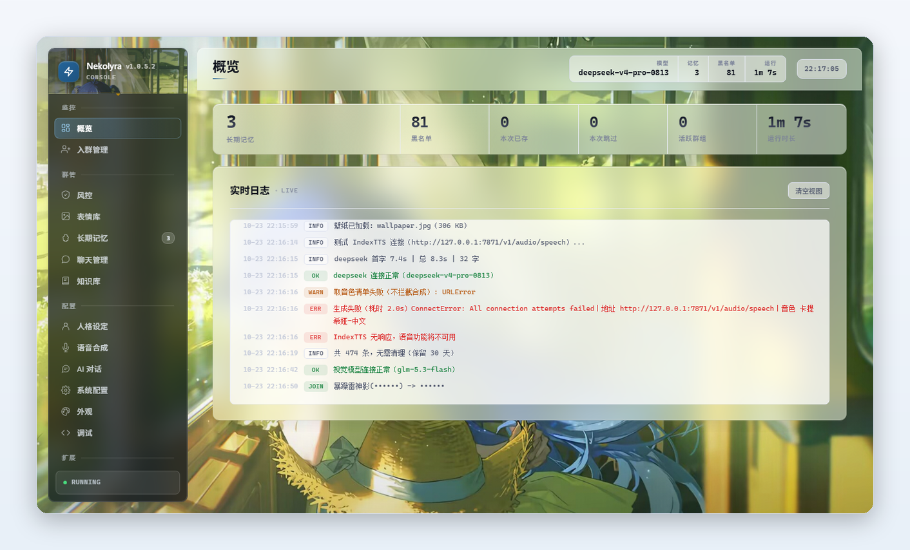
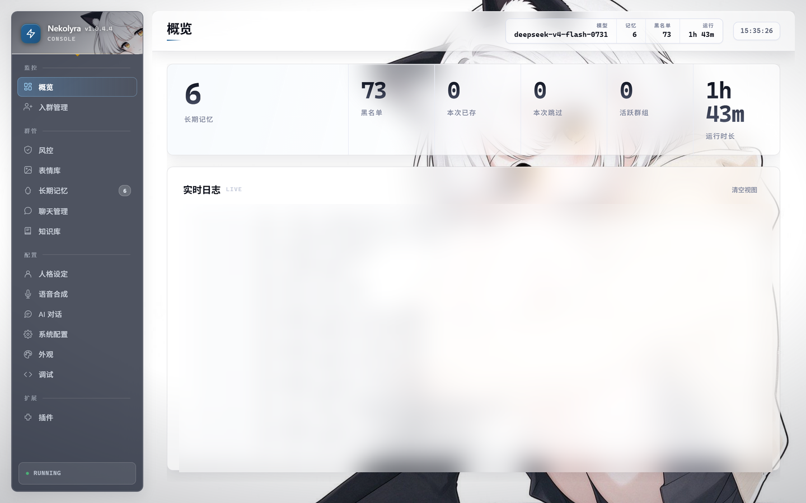
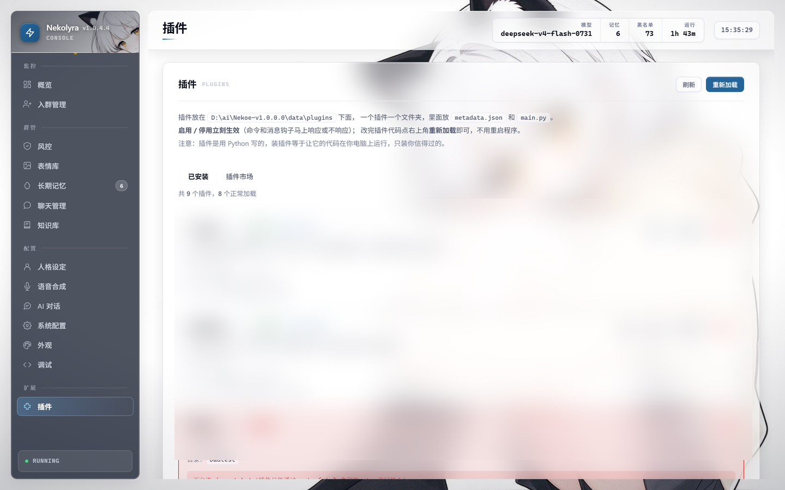
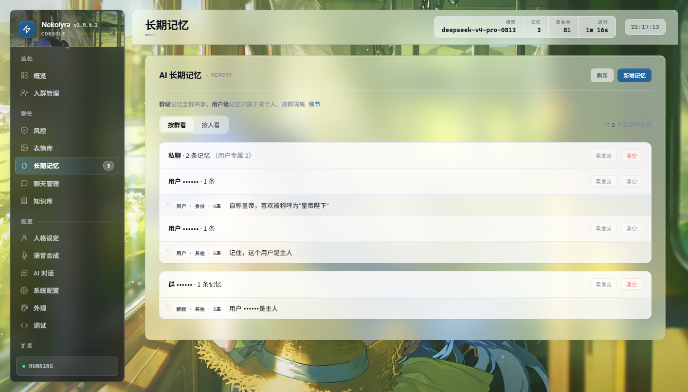
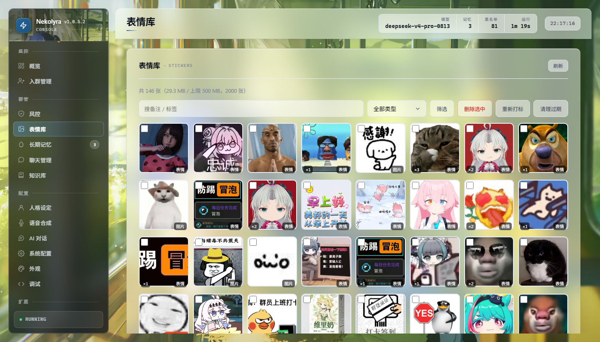

自己电脑上跑的 QQ 群 AI 机器人。
长期记忆、知识库、表情库、语音合成、可装卸的插件，以及一个完整的 Web 管理界面 ——
数据全部留在本地。

下面每一条都是真的在跑的功能，不是规划。
人格设定（名字 / 身份 / 行为 / 语气）可分层覆盖，带上下文与流式输出，不会每句都失忆。
按「群 / 人 / 群内某人」分层存进 SQLite，能在管理页里翻、改、删。
分文件夹、带去重、按群隔离。她查得到，你管得住。
群里收图 → 视觉模型写描述 → 按情绪打标 → 回话时按语气挑一张发出去。
入群验证、黑名单、广告拦截（关键词 / 黑域名）、撤回与踢人，含自带管理页。
IndexTTS / CosyVoice2，可选。先判断情绪，再按情绪挑音色。
纯 Python 目录即插件，能注册命令、消息钩子和自己的管理页，改完热加载不用重启。
原生窗口里的单页应用，跟 OneBot 接口共用同一个端口，所有接口都要 token。
群里发「帮助」，她回一张自动分页的指令图，不用记命令。
真实截图（群号与 QQ 号已打码）。




跑起来是三件事，不是一件。
Windows 下载 zip 解压双击；Linux 拉源码跑 bot.py；或者 Docker。
NapCat / Lagrange.OneBot / LLOneBot 三选一，实现 OneBot v11，反向 WebSocket 连过来。
OpenAI 兼容协议，换一家只改配置。不填她就不说话，别的功能照常。
# Windows：下载 Nekolyra-desktop-v*.zip → 解压到空目录 → 双击 Nekolyra.exe # Linux ：git clone https://github.com/awnpw/Nekolyra.git && cd Nekolyra # pip install -r requirements.txt && python bot.py # Docker ：docker compose up -d
最容易踩的坑在协议端：NapCat 版本和 QQ 版本必须对得上，错了不报错、只静默失灵。 细节见 部署指南。
随仓库发布 11 个，都能在管理页里停用或卸载。写自己的插件只要一个目录两个文件。
| 插件 | 做什么 | 标签 |
|---|---|---|
| 广告拦截 | 命中关键词 / 黑域名就撤回、拉黑、踢出，并私聊通知超管 | 群管安全 |
| 关键词回复 | 关键词自动回复，带命中统计；照着它就能写自己的插件 | 工具 |
| 晨昏播报 | 每天早晚播报问候 + 天气 + 可选语音，可指定群或全群广播 | 定时语音 |
| 游戏库 | 扫群文件建索引，用 AI 把乱糟糟的文件名整理成游戏名 | 群文件 |
| 朋友圈 | 她自己发 QQ 空间说说：想不想发、写什么、下次多久后再想，全由模型决定 | 人格 |
| 签到积分 | 每日签到拿积分、看排行、查自己的积分 | 积分 |
| 今日老婆 | 每天抽一个二次元老婆（带 AI 写的介绍和配图），可用积分换 | 娱乐 |
| 抽奖 | 从最近活跃的群成员里随机抽一个 | 娱乐 |
| 群报 | 统计群里某天的发言排行 | 统计 |
| 生词本 | 遇到不懂的词主动问，有人解释就记住并写进知识库 | 学习 |
| 打招呼 | 示例插件：被 @ 时回一句问候，改它就能写出第一个插件 | 示例 |
全量在 常见问题。
先看 startup.log 有没有「AI 连接正常」。没有就是 AI 接口没配好；有就是触发条件的问题 —— 默认要 @ 或叫名字才会理人。
NapCat 版本必须和 QQ 版本对得上，错了不报错、只静默失灵。另外确认反向 WebSocket 是往 127.0.0.1 的 PORT 连。
token 在 config.json 的 admin_token 里，URL 要用编码后的值（# & = + 空格 都要转）。
看 data/updates/update.log：它会写清楚预检、备份、换名、验收每一步。验收不过会自动退回上一版，安装目录不会停在半新半旧。
全在安装目录的 data/ 下：bot.db、plugins/、stickers/、config.json。拷走整个 data/ 就是完整备份。